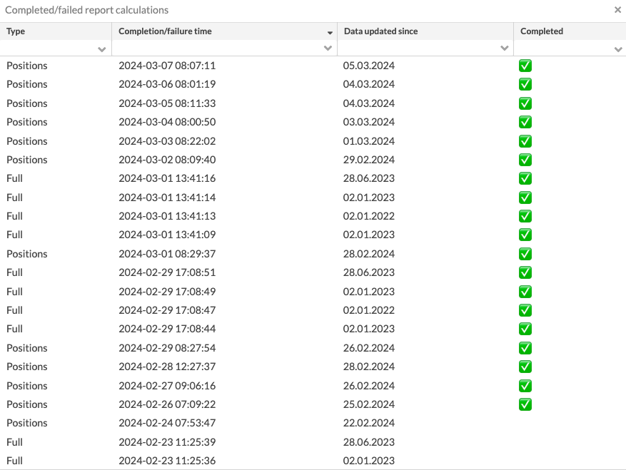

Portfolio window
Portfolio window allows you to create a new portfolio or to view and edit the information of existing portfolios. You can create a new portfolio through the menu in New - New portfolio, and you can view the information of existing portfolios by double-clicking a portfolio either from your search result on the Portfolios view or from the Overview.
The basic information for the portfolio is defined in the Basic info tab, and other tabs are used to define additional information for the portfolio. Remember to check that the portfolio has a customer as a primary contact in the Contacts tab, and if you are tracking cash balances in your portfolio, remember to add appropriate accounts in the Accounts tab.
Basic info tab allows you to define the basic information of the portfolio, such as ID and name. A red star indicates that a field is mandatory.

The available fields are:
Portfolio ID*. An individual ID defined for a portfolio. The portfolio ID separates a portfolio from other portfolios (the system does not allow more than one portfolio with a same portfolio ID). The portfolio ID is used to identify and search for a portfolio, and many of the Import functions utilize the portfolio ID. When creating a new portfolio, if the "Generate a running number for portfolio ID automatically" is enabled in Portfolios Preferences, the next available number is automatically set as the portfolio ID. Best practice is not to include special characters into the portfolio ID - only use numbers and letters (a-z).
External ID. A general ID for identifying a portfolio, for example insurance number.
Status*. Select your portfolio's status between Active, Passive or Closed. The status allows you to categorize your portfolios, for example to differentiate between portfolios you are actively managing and portfolios you have already closed. Recommended status to use for portfolios you are actively working with is Active - such portfolios are shown everywhere in the system, and you can work with active portfolios on the Overview. Passive and Closed portfolios are not selectable on the Overview (to avoid cluttering the list of portfolios you are actively maintaining) - you can still access portfolios regardless of their status through the search views.
Note
Changing the status doesn't "remove" the portfolio from the system, just hides it away from the Overview - you can, for example, still generate reports for passive portfolio through a group, portfolio's contact, or generate a report from the Portfolios view.
Valuation method*. Choose the valuation method of the portfolio:
FIFO
Average price
FIFO with adjustments , Average price with adjustments – The "with adjustments" options use transaction types that control the market value of the positions with the transaction's trade amount, such as Private Equity transaction types.
Average price with separate items – The "with separate items" option valuates your portfolios with average price, but keeps track of original purchase dates.
FIFO (combined) – The combined option valuates the portfolio based directly on transactions in the subportfolios.
Portfolio name*. Name of the portfolio.
Type*. Choose the portfolio type from the alternatives, which are defined in Preferences - Portfolio types. The portfolio type can be for example Investment portfolio or Insurance portfolio.
Aggregation of subportfolios. Choose the method to aggregate positions from subportfolios in reporting and analytics (this feature is only available for the new 3.0 reports and Analytics+):
Sum up values – Aggregate the position amounts without currency conversion. Use it if the subportfolio currencies are the same as the main portfolio currency.
Recalculate values – Aggregate transactions from subportfolios and convert the amounts to the portfolio currency (using the FX rate valid on the transaction date). Use this option if you have subportfolios in different currencies than the main portfolio currency.
Note
Even when your portfolio is locked, you can still execute trade orders that have already been marked as executable, run corporate actions, and import transactions and trade orders to your portfolio.
Custody. Choose the custody of the portfolio from the alternatives, which are defined by creating a new contact of the type Custody.
Book entry. Define the book entry number for the portfolio.
Currency*. Choose the default currency for the portfolios from the alternatives, which are defined by creating a new security of the type currency. The default currency of a portfolio defines the currency used when creating reports for the portfolio, and the transactions are recorded in the portfolio default currency.
Locked. Allows you to Lock your portfolio to prevent anyone from manually adding, modifying or deleting transactions or trade orders within the portfolio. If you try to change the transaction or trade orders within a locked portfolio, you will be notified that Your portfolio is locked! Locking a portfolio allows you to freeze your portfolio's contents from manual modifications, or for example collateralize assets by moving them to a locked sub-portfolio to prevent making modifications to the collateral.
Language. Choose the language to be used in portfolio reports from the alternatives, which are defined in Preferences - Language. The default language of a portfolio is the language of its primary contact. The language chosen for a portfolio determines, which language is used in the portfolio reports when creating a report: the reports are created in the language of the portfolio. The translations for the security and transaction types to different languages are defined in Preferences - Internationalization. If no language is selected, the reports are printed out in Finnish and the abbreviations defined for security and transaction types are used.
Juridical form*. Choose the juridical form from the alternatives, which are defined in Preferences - Juridical form. The default juridical form of a portfolio is the juridical form of its primary contact. The juridical form affects the taxation of certain transactions added to the portfolios: when creating corporate actions, the tax associated with these is defined as a combination of juridical forms and tax countries of the portfolio.
Tax country*. Choose the tax country from the alternatives, which are defined in Preferences - Countries. The default tax country of a portfolio is the tax country of its primary contact.
Creation date. Define the creation date of the portfolio.
Start-up date. Define the start-up date of the portfolio.
Update date. Define the update date of the portfolio.
Model portfolio. Choose a model portfolio for the portfolio, which is used in the portfolio rebalancing (an optional extra to FA Portfolio). When a model portfolio is linked to the portfolio, the portfolio can be rebalanced to match the model portfolio, and the system automatically creates trade orders to buy and sell securities.
Close type. Choose the close for the portfolio: No change, Depreciation, Depreciation and refund or Market value. The close type relates to Closing a portfolio: a close type can be set to a portfolio already in the portfolio information, and used for example to check the portfolio's closing values with the Book values (closing) report.
Accrued interest. Choose whether the accrued interest is calculated on the position level based on Transaction date (default) or based on Settlement date.
Transaction date – the accrued interest on a position is calculated until the selected report date. If the bond is bought, the paid accrued interest of the purchase is used as the accrued interest of the position until the settlement date of the purchase.
Settlement date – the accrued interest on a position is calculate until the settlement date. The settlement date is defined versus the selected report date using the bond's settlement date offset (if enabled), holiday calendar and business day convention. If the settlement date offset is not enabled on the bond security, the default value 0 is used.
Transaction date, interest accrued by EOD – The accrued interest on a position is calculated until the end of day on the transaction date. The transaction date is included in the interest accrual period.
Settlement date, interest accrued by EOD – The accrued interest on a position is calculated until the end of day on the settlement date. The settlement date is included in the interest accrual period.
Posting date. Define a posting date.
Price source. Choose the method to determine the close market price for the securities in the portfolio. You can use the security's close price or define a portfolio-specific priority of price sources:
Security's Market data info tab – Use the security close price, no portfolio-specific price source is used. Security close price is picked up from the Close column in the Security window, Market data info tab.
First available price from the price fields – For this portfolio, pick up the first available price in the Manual, Close 1, 2, 3, 4 or 5 columns in the Security window, Market data info tab (checking the column values in the order specified above).
Define the price source order – Define the price order for this portfolio. Choose the price columns to use in the priority order. Start typing the column name in the Price source field that appears.
Posting rule. Choose the posting rules used for the portfolio from the alternatives that are defined in Preferences > Bookkeeping > Posting rule. For more information, see Posting-based bookkeeping.
Tags. Choose tags from the alternatives defined in Preferences - General - Tags. Tags can be defined in three different ways:
Grouped tags (select one): you can select one tag from each tag group, grouped in separate dropdowns. Only one tag in each tag group can be chosen. To group tags in a dropdown, defined them with a hyphen as "group - tag".
Grouped tags (select multiple): you can select multiple tags from each tag group, grouped as separate sets of checkboxes. You can check multiple tags within each tag group. To group tags as a set of checkboxes, defined them with a colon as "group : tag".
Individual tags: search for individual tags by typing the tag in the field and choosing the correct tag from the list below the field - all available tags are shown from the downward arrow on the keyboard. You can select multiple individual tags.
Generate postings on parent level. For a subportfolio, choose if you want to generate postings for subportfolios on the parent portfolio level. This option can be useful, for example, if:
A customer has several portfolios linked to a parent portfolio.
A fund portfolio has subportfolios (for example, linked to different strategies), and the bookkeeping is done for the whole fund.
This option works only for simple two-level structures when there is only one parent for several subportfolios.
When selling, position valuation takes into account positions in all subportfolios. If you choose to generate postings on the parent portfolio level, make sure that transactions in all subportfolios have unique IDs: choose “Contact level” in the Contact window, Transaction no. level field.
In the Portfolio groups tab, you can manage the static portfolio groups the portfolio is part of and see which dynamic groups the portfolio is currently in.
Available groups - list of the static portfolio groups the portfolio can be added to. The groups are listed by name.
Current groups - list of the static portfolio groups the portfolio is currently part of. The groups are listed by name.
Dynamic groups - list of the dynamic groups the portfolio is currently part of. The groups are listed by name.
To add the portfolio to a security group, select a group from the left-side list and transfer it to the right-side list using the arrows. To remove the portfolio from a group, transfer the group from right to left. You can also add the portfolio to a security group in the Groups view. You cannot add or remove dynamic groups in the Portfolio window. You can modify dynamic group criteria in the Groups view to make changes to the dynamic groups the portfolio is part of. For more information, see Groups view.
In the Security groups tab, you can manage the security groups the portfolio is linked to. Linking security groups to the portfolio is necessary if you want to restrict trading in FA Client Portal to securities in certain groups only (see Restrict securities available for trading).
Available groups - list of security groups you can link to the portfolio. The groups are listed by name.
Current groups - list of security groups the portfolio is currently linked to. The groups are listed by name.
You can link the portfolio to both static and dynamic security groups. To link a security group to the portfolio, select a group from the left-side list and transfer it to the right using the arrows. To remove a security group from the portfolio, transfer the group from right to left. For more information about groups, see Groups view.
IDs tab allows you to define external IDs for the portfolio. These IDs are used by other parties to identify the portfolio, and can be used for example in importing transactions to the portfolio or reconciling the portfolio against an external source.
Add a new ID with the Add ID button, and define the ID information in the fields. A red star indicates a mandatory field:
External name*. The name of the ID (or who uses the ID, where is it from). When starting to type in an ID, the system automatically suggests ID names you have used previously.
External ID*. The external ID for the portfolio.
Memo allows you to write optional information, notes or observations related to the portfolio. The contents of the memo are also shown in the Memo section on the Overview, when the portfolio is selected.
The Memo is divided into different parts, which can be used to write different kinds of notes and information:
Memo. Notes written in memo can be seen on the Overview, when the portfolio is selected.
Explanation, Info 2 and Info 3 . Additional text fields that can be seen on the Overview, when the portfolio is selected.
Description . The contents of the description field can only be seen in the Portfolio window, not on the Overview.
You can also import texts to the memo from a file through Import - Import portfolio memo, or to edit the contents of the memo directly from the Memo section on the Overview.
Contacts tab allows you to choose the contact(s) of the portfolio as well as subportfolio(s) to the selected portfolio. The contact tab allows you to define your contact / portfolio structure visible on the Overview: in addition to having a contact with portfolios, you can also modify the structure by adding secondary contacts to a portfolio as well as dividing a portfolio into subportfolios.
Selecting contacts and defining access rights
Selecting a contact for the portfolio is an important part when creating a portfolio: the contact of the portfolio identifies the owner of the portfolio. The Contacts tab allows you to define:
Primary contact (marked with an asterisk) – The main or "legal" owner of the portfolio. Various information is often picked from the portfolio's primary contact. The portfolio is shown under the primary contact on the Overview.
Other contacts - Other contacts, for example, for insurance portfolios, the primary contact is often the insurance company, while the private person taking the insurance can be linked as other contact.
When creating a new portfolio, the first contact you add to the portfolio is marked as the primary contact. You can change the primary contact by de-linking the current primary contact from the portfolio, then the first contact on the list is marked as the primary contact.
To add a contact, click Add contact and choose a contact from the drop-down list. If you have representative tags set up in preferences (see Preference - Tags), you can use them to specify the contact's role for information purposes (for example, insured person).
Selecting subportfolios
Subportfolios allow you to add subportfolio(s) to the portfolio you are editing - the portfolio you are editing becomes the "main" portfolio, and the subportfolios you add will be shown below it in you portfolio hierarchy.
The portfolio's subportfolios are listed on the left side of the window. You can add a new subportfolio with the Add subportfolio button, and you can view and modify the information of an existing subportfolio by selecting the subportfolio from the list. You can de-link the selected subportfolio with the Delete button below the subportfolio information.
The Asset managers tab allows you to add asset managers responsible for the portfolio. Asset managers can, for example, be used to provide access to portfolios through limited visibility. To learn more about linking a representative to contact, see Set up limited visibility for one user and Set up limited visibility for many users.
To add an asset manager, click Add asset manager and choose a contact from the drop-down list. If you have representative tags set up in preferences (see Preference - Tags), you can use them to specify the asset manager's role in more detail for information purposes.
The Accounts tab allows you to add different kinds of accounts to your portfolio. Accounts allow you to follow your portfolio's cash balance and calculate interest for your accounts. When you link transactions to an account, the system automatically keeps track of your account balance. Accounts are not required when creating a portfolio, but if you want to follow the cash balance of your portfolio or to set up portfolio credit, you need to add at least one cash account to your portfolio.
The account at the top of the list is considered the default account of the portfolio, and all transactions are by default created against this account. If you want to create transactions against another account, you need to select it. You can modify the order of the accounts by dragging an account to the desired place in the account listing. The order of the accounts determines the order in which the accounts are shown in Overview and in reports.
A portfolio can have one or more accounts: existing accounts are listed on the left side of the window. Add a new account with the Add account button and fill in the fields in the Basic info and Interest details tabs.
Basic info
The Basic info tab contains account information, sharing and visibility options, and calculation settings.
 |
Account no.*. The account number. This can be, for example, the bank account number.
Currency*. The account currency. Currency options are defined in the system as securities of the type Currency.
Name*. The name of the account.
BIC code. The BIC code of the account.
Issuer. The issuer of your account from contacts that are defined in the system as the Issuer type. Linking an issuer to your account allows you to keep track of who has issued the account. This is especially useful when analyzing your portfolio’s investments by the issuer when accounts and other investments are grouped similarly.
Secondary account no. A secondary account number for the account.
Category. The account category. When you start to type, the system automatically suggests categories you have used previously.
Mandate reference. The mandate reference of the account.
Decimals for transactions. The number of decimal places used for amounts in transactions created against the account. This setting applies to all transaction fields except Unit price, Coefficient, Yield, FX rates , and Amount (in non-cash transactions). If you leave this setting empty, the number of decimal places is taken from Preference → Content and translations → Date and decimal formats. The "Default" value in the drop-down means:
For cash transactions – The number of decimal places specified in the Block size field for the currency security (for details, see Security window).
For other transactions – The number of decimal places specified in the Block size field for the security (for details, see Security window). If the Block size field is not defined, “Default” means the number of decimal places defined in the security type settings (for details, see Preference - Securities).
Account type. The type of the account. The different types of accounts are grouped separately within the FA Platform, for example in Overview. The available account types are:
Cash account (part of portfolio cash)
Credit account
Other account
Hide if balance is zero. Hides the account in Overview and Positions reports when the account balance is zero. The account is shown only when there is a non-zero balance. By default, accounts are not hidden.
Account sharing options:
Shared to primary contact's portfolios indicates the account is shared to all portfolios with the same primary contact. This option allows you to choose the account for transactions in other portfolios of the same contact. If portfolio A owns a shared account X and you analyze portfolio B which has transactions against account X, you do not see account X in the Overview. If you analyze both A and B or just portfolio A, you can see the shared account's information.
Shared to all parent portfolios' subportfolios indicates the account is shared only to the parent portfolio and its sub portfolios. If subportfolio B has transactions against a shared account X that is owned by parent portfolio A, you can see account X in the Overview when analyzing A or B. If A has other subportfolios, you cannot see account X when analyzing them unless they have transactions against it.
Shared to all linked contact's portfolios indicates the account is shared to the portfolio to which the primary contact is linked. If you add the owner of account X in the Contacts to a portfolio owned by another contact, account X is shared to that portfolio.
By default, the sharing options are disabled. Accounts are only shared to sub portfolios of the current portfolio. You can use shared accounts when you create transactions manually or by importing. Shared accounts are used by the system when it creates transactions through corporate actions or trade order execution, and when it creates trade orders through rebalancing. The FA Platform first checks if the portfolio has its own accounts that can be used, and if not, it checks if the portfolio has shared accounts that can be used.
Visibility (include account in reports). Indicates the account is visible in Overview and in other views, taken into account in all portfolio reports, and is available as a criterion when defining dynamic groups. Visibility is enabled as a default for all accounts. If an account is defined as not visible (i.e. hidden), the account is ignored in all calculations.
Exclude balance from portfolio total. Indicates the account is shown in your positions but its balance is not included in the total market value (or other total values) of your portfolio. By default, accounts are not excluded from the portfolio's total. This option is useful in tracking the total capital added to an insurance contract and the profits taken out.
Account tags. Account tags from the options defined in Preferences → General → Tags. Tags can be defined in the following ways:
Grouped tags (select one). You can select one tag from each tag group, grouped in separate drop-downs. Only one tag in each tag group can be chosen. To group tags in a drop-down, define them with a hyphen as follows: "group - tag".
Grouped tags (select multiple). You can select multiple tags from each tag group, grouped as separate sets of checkboxes. You can check multiple tags within each tag group. To group tags as a set of checkboxes, define them with a colon as follows: "group : tag".
Individual tags. Search for individual tags by typing the tag in the field and choosing the correct tag from the list below the field. Use the downward keyboard arrow to view all available tags. You can select multiple individual tags.
Interest details
The Interest details tab contains account interest calculation settings.
 |
Base instrument. The base instrument from the securities defined in the FA Platform. The base instrument is mandatory when calculating accrued interest on the account. If you want to set a flat interest on the whole amount, create a new security with one price and add it as the base instrument.
Offset days. Indicates the date for checking the price of the base instrument. You cannot add a negative offset day value. Offset days are always calculated back in time.
Calendar (day count convention). The day count convention for the account. The day count is used to convert dates into a numeric representation for financial maths. You need to define a calendar day convention in order to run account interest calculations.
Transaction type. The transaction type for the selected account.
Thresholds. A feature for setting the interest rate at different levels based on the account balance. Thresholds are optional. If no thresholds are defined, the interest rate is the same regardless of the account balance. The interest rate specified for a given threshold only applies to the amount of funds in that range instead of the full account balance. For example: The account balance is 120 000€. Thresholds are set at 2% for 0-50 000€, 3% for 50 000-110 000€, and 3.5% for 110 000-200 000€. Interest is paid as follows: 2% on 50 000€, 3% on 60 000€, and 3,5% on 10 000€.
To add a new threshold or edit existing thresholds, click Edit. If you do not want to specify an upper limit for a threshold, you need to enter a very high value in Balance to to ensure that the threshold cannot be exceeded which would result in zero interest for the balance exceeding the upper limit of the threshold. Remember to specify the spread for each threshold.
Balance from. The lower limit for the account balance at which the interest rate applies.
Balance to. The upper limit for the account balance at which the interest rate applies.
Spread. The spread added to the values from the base instrument as a percentage. Enter the value as a number without the percent sign.
The last two fields are from older versions of FA Back. Do not use them for account interest calculation.
Fixing. The annual fixing as a percentage %. Fixing can be used to calculate the account's accrued interest with a custom formula.
Spread. The spread added to the values from the base instrument as a percentage %. Spread can be used to calculate the account's accrued interest with a custom formula.
Reporting tab allows you to define the information related to whom this portfolio should be reported to, and information needed to sending reports via email.
Reporting contacts
You can set one or more contacts as "reporting contacts", or contacts to whom this portfolio should be reported to. All the reporting contacts are listed on the left side of the window based on the name of the contact. The primary contact of the portfolio is marked with a star, and the primary contact is a default reporting contact.
Choose a contact from the list to view or delete it. Add a new reporting contact to the portfolio with the Add reporting button below the contact listing. Choose the contact from the drop-down menu on the right side of the window, and add the chosen contact to the portfolio from the Add reporting button below the asset manager information.
Note
The reporting contact is "nice-to-know" information, and it is not directly used by the system in reporting. For example, when sending reports via email per customer, the customers the email is sent to is picked up from portfolio contacts, not reporting contacts.
Reporting email addresses
When sending reports via email per portfolio, the generated reports are sent to the email addresses listed within the Reporting tab. If not email address is defined, no reports are sent to this portfolio via email.
The available fields are:
Email addresses. The email addresses to send out this portfolio's reports when sending reports via email per portfolio. This field is useful if you want to define per portfolio who should receive this portfolio's reports, especially if you want to send to reports to a contact not found in the system. You can define several email addresses in this field, just separate the addresses with a comma.
Fees tab allows you to define the different default fees related to the transactions created to the portfolio.
Cost types
Cost types allow you to associate different fees to your portfolio - a fee always consists a type (i.e. what kind of a fee this is), and a fee value (i.e. 1%). The fees you associate with your portfolio are often used as parameters in your fee formulas, in other customizations you have in your system, or as "nice-to-know" information on your portfolio's fees.
In addition, specific fee types are used when calculating fees to trade orders in Rebalancing, when calculating costs for trade orders in Trade order execution, and when manually entering transactions in the Transaction window. You can use the fees of the type "transaction" by typing a question mark (?) to the Fee field in the Transaction window - the system automatically calculates the fee for the transactions by using the defined "transaction" fee percentage from the portfolio.
The fees added to your portfolio are listed on the left side of the window: you can associate any fee type defied in Preferences - Fee calculation - Portfolio cost types and a portfolio-specific fee percentage to your portfolio. Choose a fee from the listing to view or delete it, and add a new fee to your portfolio with the Add button below the listing. Fill in the account information in the available fields.
The available fields are:
Costtype - choose the cost type of the fee from the alternatives, which are defined in portfolio cost type preferences (to learn more, see Preference - Fee calculation). The type determines what kind of a fee you are adding, and different types of fees might be considered differently within you system.
Name - shows the name of the chosen cost type.
Type - shows the type of the chosen cost type.
Value - define the value of the fee - usually, the fees are defined as percentages (i.e. 1,00 means 1%).
Cost formulas
Cost formulas you link to your portfolio are used in Fee calculation, for example when calculating the Asset management fee for the portfolio.
The cost formulas linked to your portfolio are listed on the left side of the window: you can link any cost formula defined in Cost formula Preferences to your portfolio (to learn more, see Preference - Fee calculation). Choose a fee from the listing to view or delete it, and add a new fee to your portfolio with the Add button below the listing. Fill in the account information in the available fields.
The fields available are:
Cost formula – choose the cost type of the fee from the alternatives, which are defined in cost formula preferences (to learn more, see Preference - Fee calculation). The formula determines how / with what logic the fee is calculated to the portfolio. The eye icon next to the field allows you to preview the the logic / code of the formula.
Name – shows the name of the chosen cost formula.
Code – shows the code of the chosen cost formula.
Transaction type - shows the transaction type associated with the selected cost formula: which transaction type the formula is associated with.
Benchmark tab allows you to define a benchmark index for your portfolio.You can either define a portfolio-specific benchmark index, or link a general benchmark index to your portfolio (for details, see Preference - Portfolios).
Benchmark indices are used to compare the performance or return of a portfolio to an index. The benchmark index linked to a portfolio is visible, for example, in some P/L reports, and in Analytics Plus. Benchmark indices can be:
Single or composite. Single benchmarks consist of one index. Composite benchmarks consist of a combination of different indices (for example, a composite of 40 % index A and 60 % index B). If your benchmark consists of indices in other currency than your portfolio's currency, the index values are converted to your portfolio's currency with a relevant FX rate.
Regular or interpolated. Regular benchmarks are based on the dates and position shares that you entered. For example, you can set a benchmark that is valid from 01.01.2022 and contains 20% of a certain stock. Then, you can raise the position share, for example, to 22% starting from 01.03.2023, and so on. Interpolated benchmarks are based on the position shares on the start and end date of the period. The values between the dates are calculated by the system to create a gradual change that occurs on business days. For example, if you want to reduce investments in a particular sector from 30% to 20% over 5 years, you can enter two dates and specify the start and end position shares. The values in between the dates will be calculated automatically.
General or portfolio-specific. General benchmark indices are defined in Preferences. You can then apply them to a portfolio by choosing a general benchmark in the Portfolio window, Benchmark tab. Portfolio-specific benchmarks are defined per portfolio in the Portfolio window.
If multiple portfolios follow the same benchmark index, it is worth defining a general benchmark index. Also, any modifications made to the general benchmark index affect the portfolios linked to the index.

Current benchmark
The Current benchmark tab is displayed if a benchmark (portfolio-specific or general) is defined for the portfolio. It allows you to view your benchmark values without navigating through different tabs and dates. If you have an interpolated benchmark, the Current benchmark tab shows the benchmark weights based on the interpolation.
When you open the tab, it shows the benchmark values on today's date. You can choose another date to view the benchmark values for that date.
Portfolio-specific benchmark
A portfolio-specific benchmark is used only for this one portfolio - any changes you make to the content of the benchmark affect only this one portfolio.
When defining a benchmark, first select the date from which the benchmark is valid from for the portfolio and Add it to your benchmark definition. The start date should usually be set as the start date of your portfolio (i.e. when the portfolio starts getting in transactions) - if the benchmark starts later than your portfolio, then the benchmark will be shown as a flat line until the date it is valid from. If you want to update your benchmark's content, add a new date to it - the new content will be valid from the new date onward, while the prior index content will be used until the new date.
Below each date you can see the content of the benchmark index. You can Add a new position for the index under the selected date: you need to define the security the index follows and the share of this security from the whole index. For each new position under the selected date, choose the index security from the drop-down menu. In the field next to the security, define the share of the selected security of the whole index. If the index follows a single security, define the share as 100 % - if the share of the selected security is less than 100, you have to create new positions and define their shares so that the sum of the shares of different securities under one date equals 100.
In addition, you can Copy model portfolio benchmark. If a Model portfolio is linked to the portfolio in the Basic info tab, and if a benchmark index is defined to the portfolio linked to the model portfolio in Model portfolio window, the benchmark index can be fetched from the model portfolio's linked portfolio and added to your portfolio. The option is only available, if a model portfolio is linked to the portfolio, and a benchmark index can be found from the model portfolio.
General benchmark
You can also set a general benchmark index to your portfolio instead of defining a portfolio-specific benchmark index. You can choose a general benchmark from the options you have defined in Benchmark index Preferences (see Preference - Portfolios). The benchmark index information of the selected index is shown at the bottom of the window.
Strategy tab allows you to define a strategy for your portfolio. A portfolio can contain multiple strategies, for example, for asset allocation, geographical allocation and industrial allocation. After a strategy is defined, you can track your portfolio's allocation and see if it follows your strategy. Make sure you allocated your securities with the same asset classes and types for comparison to work.

A strategy is defined in the fields on the right side of the tab. To see all settings, including the ones that are valid only for Strategy analyzer, click Show strategy analyzer settings:
- Asset group
The asset group the strategy is based on. For example, geographical or industry. The asset group serves as a strategy name shown in the list of strategies on the left.
- Date
The date from which the strategy is valid in a portfolio. This is usually the start date of your portfolio (when the portfolio starts getting in transactions). If you have a regular strategy, define one date and enter the position shares. You can later update the strategy by adding a new date and re-defining the strategy positions. The updated strategy is valid from the new date onward. If you have an interpolated strategy, you need to enter at least two dates: start date and end date of the change. For example, if you set a start date to 8.10.2022, the position shares get changed on 9.10.2022.
- Interpolate between dates, using holiday calendar
An option to create regular or interpolated strategies for the portfolio. Regular strategy is based on the dates and allocation shares that you entered. For example, you can set a strategy that is valid from 01.01.2022 and contains 20% of a certain asset type. Then, you can raise the allocation share, for example, to 22% starting from 01.03.2023, and so on. Interpolated strategy is based on the allocation shares on the start and end date of the period. The values between the dates are calculated by the system to create a gradual change that occurs on business days. For example, if you want to reduce investments in a particular sector from 30% to 20% over 5 years, you can enter two dates and specify the start and end share percentage. The values in between the dates will be calculated automatically.
You can set up interpolated strategy only if you have one strategy group. Interpolation is applied in Strategy analyzer.
- Asset type
The asset type you set the target shares for.
- Share %
The share of the asset class in the strategy. Shares of different asset classes under one date must sum up to 100.
- Min share %, Max share %
Minimum and maximum share of the asset type.
- Excluded
An option to exclude an asset type from strategy analysis. For example, you can choose to exclude "off-benchmark" investments associated with higher risks. This option is taken into account only in the Strategy analyzer.
- Fixed
An option to set the fixed weight for an asset type. A fixed weight is calculated based on the whole portfolio content and is not affected when you exclude an asset type from your strategy analysis.
Investment plan allows you to define an investment plan for the portfolio - the user interface works similarly to defining a benchmark index or a strategy to a portfolio. You can use your portfolio's investment plan as a portfolio-specific model when rebalancing your portfolios.
An investment plan consists of securities with percentage shares of how many percent each security constitutes of the entire plan. Investment plan essentially allows you to define which individual instruments you want to invest in, and how big of a share out of your portfolio total you want to target to invest in a specific security. If you want to include portfolio's account as a position in your investment plan, add the currency of the account as a security in the plan. See also Including portfolio's cash in model portfolios.
In addition to defining target shares for each position, you can also define the minimum and maximum shares for each security. This allows you to define minimum and maximum “thresholds” for each position, or how much you'd allow your position to deviate or drift from your target. For example, you can add an instrument to your plan with target 10%, min threshold 9% and max threshold 11%. (Available from FA 3.8 onward)
Minimum and maximum thresholds are validated, ensuring they align with your target - if you have defined either Min share % or Max share % , your Min share % should be smaller or equal to target Share %, and Max share % should be larger or equal to target Share %. Thus, should always define both minimum and maximum threshold (if you only define a Max share %, leaving the Min share % untouched interprets 0% minimum threshold). If you try to save invalid min and max thresholds, you are presented with a warning Min and max shares should be consistent with the target share % and prevented to save invalid thresholds. You can also choose not define minimum and maximum shares in your investment plan - if you leave both min and max untouched (i.e. both min and max share are 0), they are shown with a hyphen "-" in your plan.
Investment plan does not have to add up to 100%, allowing you to define partial or leveraged investment plans. However, if your investment plan doesn't add up to 100%, you are presented with a question "Positions in your investment plan add up to xx %. Do you want to save your investment plan even though it does not add up to 100 %?" to prevent you from unintentionally saving non-complete investment plans.
The Limits tab allows you to link, analyze and monitor limits, or investment constraints on your portfolio.
For more information, see Limit analysis in FA User guide.
The Key figures tab allows you to manually record values for different portfolio indicators. For example, you can store fee percentages that change over time. For more details, see Key figures for contacts, portfolios and securities.
Key figures are used in Analytics+ and override values calculated by the system if they are within the selected period. Your manually defined key figure values are aggregated on the group level if all portfolios within the group have a defined value. To learn how to add Analytics+ columns based on key figures, see Add a column based on a key figure in FA Developer.
The following table describes portfolio key figures. Except for the portfolio credit key figure, these key figures cannot be edited. They are used by the system to record and calculate values for portfolio credit. For details on how to give portfolio credit, see Provide credit to your clients.
Key figure | Description |
|---|---|
Collateral value | The collateral value of a portfolio position, calculated by multiplying the market value and collateral ratio of the security. |
Available credit | The amount of portfolio credit available for the client to use. |
Used credit | The amount of portfolio credit already used by the client. |
Portfolio credit | The total amount of portfolio credit made available to the client. |
The Portfolio credit tab is where you can manage the amount of credit you want to give to the portfolio. The tab allows you to see the collateral value of portfolio positions, the amount of credit already used for the portfolio, and the amount of credit still available. You can also choose the total credit amount for the portfolio and check the portfolio credit calculation details. The following list describes the fields in this tab. For more details, see Provide credit to your clients.
 |
- Collateral value
The summed-up collateral value of all positions in the portfolio. You can use this value as a basis for assigning the total amount of credit for the portfolio.
- Currency
The currency of the portfolio and of the collateral value. Portfolio credit is always in the same currency as the portfolio.
- Total credit
The total amount of credit you choose to make available for the portfolio.
- Used credit
The amount of credit that the portfolio has already used.
- Available credit
The amount of credit still available to use. Available credit is calculated by subtracting the used credit amount from the total credit.
Calculation details
Clicking on the Calculation details button opens a window that gives you more details of the collateral calculation process. This includes the formula used which is as follows: Position amount * collateral ratio = collateral value.
The table below the formula shows each position contributes to the summed-up collateral value of the portfolio. The Market value is multiplied by the Collateral ratio %, resulting in the collateral value of the position.
The collateral ratio of a position in the table is determined by the value you assign for the security as its Collateral ratio in the Key figures tab. Enter the ratio as a percentage without the percent sign. For more details, see Security key figures.
 |
To open the Completed/failed report calculations window, click . The window shows a list of completed and failed report calculations for the portfolio. The following columns are shown:
- Type
The report calculation type.
- Completion/failure time
The date and time when the report calculation was completed or when it failed.
- Data updated since
The date from which onwards the data was calculated. For example, if the date in this column is a week in the past, the report calculations were made from that date onwards to the completion time.
- Completed
Whether the report calculation was completed or not. A green checkmark indicates successful completion.
|  |
Saving a portfolio saves the portfolio into the system, and after you save the portfolio, you can for example create transactions to it. When editing the information of an existing portfolio, usually the system just updates the portfolio information - the updated information is picked up by the system automatically.
However, if you modify Valuation method or Source field value within the Basic info, modify your portfolio's accounts within the Accounts tab, or change your portfolio's benchmark within the Benchmark tab, the system automatically triggers a report recalculation to update the effect of the change into your portfolio's positions.
At the bottom of the Portfolio window, you can:
Save and close – saves the portfolio / the changes made to the portfolio information and closes the window.
Save – saves the changes made to the portfolio information, and takes you back to the Basic info tab.
Copy as new – copies all of the existing portfolio's information as a base for you to create a new portfolio with a new ID. This function copies all other portfolio information except for the Portfolio ID, External ID and entries in the IDs tab, since these are portfolio-specific and related to only one single portfolio.